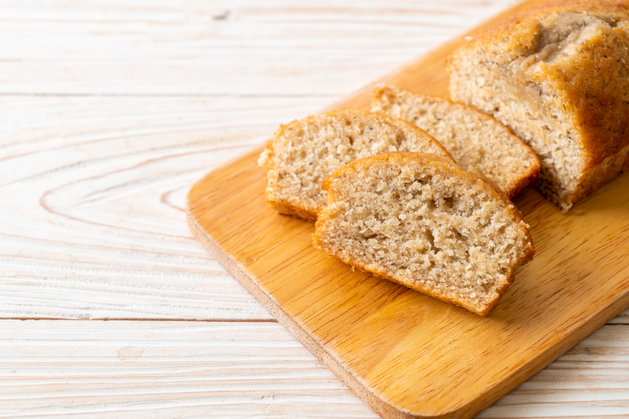

Banana Bread!

Banana Bread: Banana bread has a sweet and fruity flavor, thanks to the ripe bananas. It is a moist and tender bread that is perfect for a quick breakfast or snack.
Bananas are a good source of potassium, which is important for maintaining healthy blood pressure and heart function.
Ingredients
- 1 cup sugar
- 1/2 cup butter, softened
- 2 eggs
- 4 ripe bananas
- 1 teaspoon vanilla extract
- 2 cups all-purpose flour
- 1 teaspoon baking soda
- 1/4 teaspoon salt
Steps
- Preheat your oven to 350°F (180°C). Lightly grease a 9x5-inch loaf pan.
- In a large bowl, cream together the sugar and butter until smooth. Beat in the eggs one at a time, then stir in the mashed bananas and vanilla.
- In a separate bowl, whisk together the flour, baking soda, and salt. Gradually add this to the wet ingredients and mix until just combined.
- Pour the batter into the prepared loaf pan and bake for 60-70 minutes, or until a toothpick inserted into the center comes out clean.
- Let the bread cool in the pan for a few minutes, then remove it and let it cool completely on a wire rack. Slice and serve.